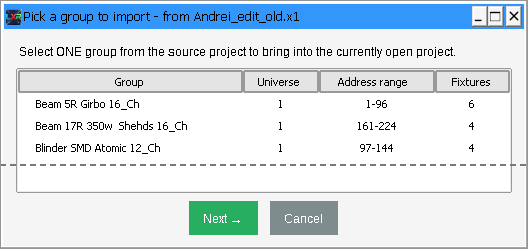
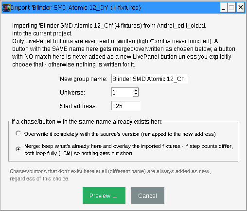
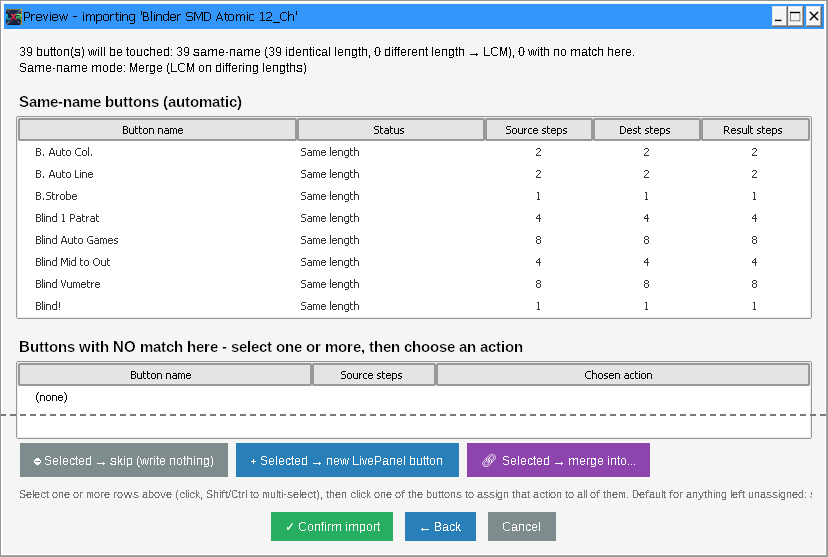

For: Full
Import from another X1 (in +Add Fixture) brings one group of
fixtures from another project into the open one - the fixtures, and what the Live panel buttons of that project hold
for them. The other project can be an .x1 or an .xR; it is only read.
Open source X1 file asks for the other project. When one was read before, a small window offers Pick a group from it or Load a different file. Then the groups of its patch are listed:

The groups of Andrei_edit_old.x1, with their universe, addresses and number of fixtures.
Select one group and press Next.

The group Blinder SMD Atomic 12_Ch going to universe 1, address 225.
Only the Live panel buttons are read and written. The buttons with no button of the same name here are decided in the next window.

The Preview: 39 buttons of the same name, none without one.
When it is done, a message sums it up: the fixtures imported, and the buttons new, merged, overwritten or skipped.
When sliders of the other project also control the group - a dimmer master, for example - the program asks whether to look at them. Import sliders lists them, with for each: Skip, New slider (with only the addresses of the imported fixtures - no slider of this project is touched) or Merge into... a slider of this project (it then controls both the old and the new fixtures). A slider of the same name is offered as a merge at first, the others as new sliders.
Tip: the import is one change and the sliders another: Undo takes them back one at a time. Save writes them into the project file.